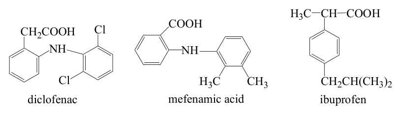

某分析員以分光光度法測某錠劑一批的含量。如已知其正確含量為100%，而該分析員所測得的含量 百分比為95.6、96.2、95.3、95.2、96.1，則該員之分析結果可評定為：
- （A）精確且正確
- （B）不精確但正確
- （C）精確但不正確
- （D）不精確亦不正確
答案：（C）
這一頁是民國 101 年第 1 次藥師藥物分析與生藥學的整份歷屆試題，共 80 題，題目與標準答案出自考選部「國家考試試題及測驗式試題答案」開放資料，其中 36 題附有詳解。以下逐題列出題幹、選項與答案；要計時作答或記錄成績，請用線上練習。
考選部原始場次代碼：101030
線上作答這一科 →答案：（C）
答案：（B）
答案：（D）
答案：（C）
答案：（A）
答案：（D）
答案：（D）
答案：（D）
答案：（B）
答案：（A）
答案：（C）
答案：（D）
答案：（C）
答案：（B）
答案：（B）
答案：（A）
答案：（D）
答案：（A）
答案：（D）
答案：（B）
答案：（D）
答案：（B）
答案：（C）
答案：（B）
答案：（A）
答案：（D）
答案：（A）
答案：（A）
答案：（D）
答案：（C）
答案：（D）
答案：（A）
答案：（A）

答案：（A）
答案：（D）
答案：（C）
答案：（C）
答案：（D）
答案：（A）
答案：（C）
答案：（C）
答案：（D）
正解：判準是區分 Aloe 的外用凝膠與瀉下藥材所含的蒽類配糖體。（D）所稱的 dianthrone glycosides 是番瀉葉等瀉下生藥的典型成分；Aloe 的瀉下主成分則為 anthrone C-glycosides，例如 aloin，因此（D）把 Aloe 的主要成分說成 dianthrone glycosides 錯誤，故選 D。
A：Aloe Vera gel 可作為外用製劑，用於燒傷、燙傷及 X-射線傷害的皮膚照護，敘述正確。
B：Aloe Vera gel 的有效成分位於新鮮葉的黏液質，這是其與乾燥葉汁製得的瀉下藥材不同之處。
C：作為瀉下生藥的 Aloe 取自葉汁，經處理後取得含蒽類成分的部分，敘述正確。
本題考點：蘆薈凝膠與葉汁（Aloe vera gel and Aloe latex）——外用凝膠看新鮮葉黏液質，瀉下用途則看葉汁來源；蒽類瀉下配糖體（anthranoid laxative glycosides）——判斷成分時要分清 anthrone C-glycosides 與 dianthrone glycosides 的來源生藥。
答案：（A）
正解：Cascarosides 的結構判讀重點在於同時具有 O-glycosidic 與 C-glycosidic linkage，因此歸為（A）O- and C-glycosides，故選 A。
B：S-glycoside 的糖苷鍵經由硫原子連結；Cascarosides 並不以硫原子形成其糖苷鍵。
C：N-glycoside 需由氮原子參與糖苷鍵，這不是 Cascarosides 的結構特徵。
D：雖然 Cascarosides 具有 C-glycosidic linkage，但不具有 S-glycosidic linkage，組合仍錯誤。
本題考點：糖苷鍵分類（glycosidic linkage classification）——先看糖與苷元之間實際經由哪個原子連結，再判為 O-、C-、N- 或 S-glycoside；Cascarosides（Cascarosides）——同時出現 O- 與 C- 型連結時，不能只以其中一種糖苷鍵概括。
第 44 題待校
答案：（B）
答案：（B）
正解：Cyanogenic glycoside 的判準是水解後可釋出氰化氫。（B）Apricot pits 含 amygdalin，具此類氰苷特徵，故選 B。
A：Black mustard 的代表性成分為 glucosinolate，例如 sinigrin，水解後形成異硫氰酸酯類，並非 cyanogenic glycoside。
C：Salix 的代表性配糖體是 salicin，屬酚性配糖體，與可釋出氰化氫的 amygdalin 不同。
D：Glycyrrhiza 的主要成分 glycyrrhizin 為三萜類 saponin glycoside，不屬氰苷。
本題考點：氰苷（cyanogenic glycosides）——看到水解釋出氰化氫的特徵時，優先聯想到 amygdalin 類成分；生藥配糖體鑑別（pharmacognostic glycoside identification）——以水解產物與苷元骨架區分 cyanogenic glycoside、glucosinolate、酚性配糖體及 saponin glycoside。
答案：（A）
正解：Frangulin A 與 Frangulin B 的比較，重點在（A）連接於相同母核上的糖基種類不同，而不是糖基數目、結合位置或立體方位，故選 A。
B：兩者的差異不在糖基數目；只改變糖的種類即可形成不同的 Frangulin。
C：兩者不是因糖基接到不同位置而區分，結合位置並非本題的主要差異。
D：糖苷鍵的立體方位不是 Frangulin A 與 Frangulin B 命名差異的判準。
本題考點：配糖體結構比較（glycoside structural comparison）——比較同系列配糖體時，依序檢查苷元、糖基種類、糖基數目與結合位置；Frangulin 類（Frangulin glycosides）——母核相同而糖基不同時，應以糖基種類作為鑑別依據。
答案：（A）
正解：大蒜辣素 allicin 在轉化過程中可形成具有抑制血小板聚集、抗血栓作用的（A）（Z）-Ajoene，故選 A。
B：Diallyl disulfide 是 allicin 受熱或蒸餾分解所得的簡單含硫化合物，屬大蒜油的主要成分，不是題目所問由 allicin 重排縮合形成且以抗血栓作用著稱的 Ajoene。
C：Diallyl trisulfide 同屬 allicin 受熱分解生成的大蒜油含硫化合物；分辨關鍵在於 allicin 須在油相或溶劑中重排縮合，才生成含乙烯基二硫結構、具抗血小板聚集作用的 Ajoene，該轉化產物才是題幹指定者。
D：Alliin 是 allicin 的前驅物，經 alliinase 作用才生成 allicin，方向與題目所問的後續形成物相反。
本題考點：大蒜含硫成分轉化（garlic organosulfur transformation）——先判斷成分是 alliin 至 allicin 的前驅關係，或 allicin 後續產生的產物；Ajoene 抗血小板作用（Ajoene antiplatelet activity）——題幹提到抗血栓時，辨認 allicin 轉化形成的 Ajoene。
答案：（B）
正解：Privet Fructus 為女貞子，檢驗標準品應選能代表其 iridoid glycoside 類成分的（B）Ligustroside；它是女貞子品質鑑別常用的指標成分，故選 B。
A：Betaine 是甜菜鹼類成分，常與枸杞子等生藥的鑑別連結，並非女貞子的代表性檢驗標準品。
C：Geniposide 是梔子等來源常見的 iridoid glycoside；同屬一類化合物不能取代女貞子特有的指標成分。
D：Gomisin A 為五味子相關的 lignan 成分，與女貞子的品質標準無對應關係。
本題考點：生藥指標成分（marker compound）——選檢驗標準品時，先把藥材基原與其特徵性成分配對，不能只依化學類別相同判定；iridoid glycosides——遇到女貞子時，以 Ligustroside 作為優先辨識線索。
答案：（B）
正解：何首烏的基原植物為 Polygonum multiflorum，所屬科別為 Polygonaceae，故選 B。
A：Campanulaceae 為桔梗科，科別判斷不能因藥材名稱或根部外觀相近而與何首烏混同。
C：Rhamnaceae 為鼠李科，並非何首烏基原植物的分類位置。
D：Ranunculaceae 為毛茛科，與何首烏所屬的蓼科不同。
本題考點：生藥基原與科別（botanical origin and family）——看到藥材名時，應由其拉丁學名回推科別，而非以功效或藥用部位判別；Polygonaceae——何首烏是此科的典型鑑別配對，考題若更換同科藥材仍要回到基原核對。
答案：（B）
正解：枇杷葉的治療取向是清肺、降氣與化痰止咳，特別對肺熱所致的咳嗽痰多相符，因此（B）止咳化痰（熱痰）最符合，故選 B。
A：溫化寒痰須以溫性藥物處理寒痰內盛；枇杷葉不是以溫散作用為主，寒熱方向不合。
C：芳香化濕著重以芳香性藥物化除中焦濕濁，與枇杷葉清肺降逆的主治位置不同。
D：辛溫解表是發散風寒的外感初期處置；枇杷葉不以發汗解表為主要功效。
本題考點：枇杷葉功效（Eriobotryae Folium action）——咳嗽題先辨痰熱或痰寒，枇杷葉對應清肺化痰與降氣止咳；中藥性味方向（thermal property）——溫化寒痰、芳香化濕與辛溫解表分別對應不同病位與寒熱，不能以都有呼吸道症狀就互換。
答案：（D）
正解：脂肪酸生合成每一輪碳鏈延長包含縮合時的脫羧、β-ketoacyl 的還原、脫水與雙鍵還原；去乙醯化不屬於這個循環，因此（D）deacetylation 不會發生，故選 D。
A：Decarboxylation 發生在 malonyl-ACP 參與縮合時，釋放的二氧化碳有助於推動碳鏈延長反應。
B：Dehydration 位於 β-hydroxyacyl 中間體形成後，將其轉為含雙鍵的 enoyl 中間體。
C：Reduction 至少包括 β-ketoacyl 還原與 enoyl 雙鍵還原兩個步驟，是飽和脂肪酸生成所需反應。
本題考點：脂肪酸合成循環（fatty acid synthesis cycle）——每輪要依縮合、還原、脫水、再還原的次序判斷反應；malonyl-ACP decarboxylation——脫羧是延長碳鏈的驅動步驟，不可與去除乙醯基混為一談。
答案：（A）
正解：油脂性栓劑基劑須在室溫維持固體、置入後能在體溫附近熔化釋放藥物；（A）Cocoa butter 具此熔融特性，是經典的栓劑基劑，故選 A。
B：Coconut oil 的熔點較低，常呈軟質或液態，單獨使用時不易提供栓劑所需的室溫形狀穩定性。
C：Corn oil 在室溫為液態油，不能直接製成可插入且能保持形狀的傳統栓劑。
D：Carnauba wax 熔點高且質硬，置入後不會在體溫附近適當熔化，與油脂性栓劑基劑的要求相反。
本題考點：油脂性栓劑基劑（oleaginous suppository base）——先比較室溫硬度與體溫熔化性，兩者兼具才適合作為基劑；Cocoa butter——遇到傳統油脂性栓劑的代表品項時，可由其體溫熔化特性優先判定。
答案：（A）
正解：蒼耳子為 Xanthium 屬植物的果實，其基原植物歸入 Compositae，亦即菊科，故選 A。
B：Liliaceae 為百合科，與蒼耳子基原的菊科分類不同。
C：Labiatae 為唇形科，現常稱 Lamiaceae，並非蒼耳子所屬科別。
D：Leguminosae 為豆科，判斷科別時不能因蒼耳子為植物果實就歸入此科。
本題考點：蒼耳子基原（Xanthii Fructus origin）——以 Xanthium 與菊科的固定配對辨識，不以藥用部位猜測科別；科別同義名稱（Compositae/Asteraceae）——遇到新舊分類名稱時，先辨認是否指同一科再作答。
答案：（D）
正解：題幹所列越南、中國南部與印尼等熱帶亞洲栽培地，對應由 Cinnamomum 樹皮入藥、常用於中藥的（D）桂皮，故選 D。
A：印度蛇木以南亞藥用植物身分較具代表性，並非題幹所描述的常用中藥及產地組合。
B：吐根的傳統來源與熱帶美洲關係密切，產地線索不符合題幹。
C：毛地黃是溫帶地區藥用植物，與題幹的熱帶亞洲栽培情境不相符。
本題考點：生藥產地辨識（geographical source of crude drugs）——題目同時給地理範圍與藥材用途時，須兩項都吻合才可選擇；桂皮（Cinnamomi Cortex）——由熱帶亞洲的 Cinnamomum 樹皮與常用中藥身分建立辨識連結。
答案：（B）
正解：Eriodictyon 為製劑學中經典的矯味生藥，其萃取物可掩飾 Quinine 的強烈苦味，因此（B）最符合特定用途，故選 B。
A：Rosin 是松香類樹脂，主要用於樹脂性材料或製劑相關用途，並非掩飾 Quinine 苦味的矯味生藥。
C：Cinnamon 雖具芳香氣味，但題幹所指的經典 Quinine 掩味用途是 Eriodictyon；一般香辛料的芳香不能取代此特定配對。
D：Nutmeg 為芳香性香辛生藥，沒有以掩飾 Quinine 苦味為代表的製劑用途。
本題考點：矯味生藥（pharmaceutical flavoring agent）——問特定藥物的苦味掩飾時，要記住藥物與矯味材料的固定配對；Eriodictyon——其重點是改善 Quinine 製劑適口性，不是依一般芳香性選擇。
答案：（A）
正解：大麻的主要迷幻作用由（A）Tetrahydrocannabinol 負責，尤其是常稱 THC 的主要活性形式，故選 A。
B：Cannabinol 是大麻素相關成分，但其迷幻活性遠非大麻主要精神作用的代表。
C：Cannabidiolic acid 為酸性大麻素相關前驅物，不能作為造成典型迷幻作用的主要成分。
D：Cannabichromene 同屬大麻素家族，但不是造成大麻主要精神活性的指標成分。
本題考點：大麻素活性（cannabinoid activity）——判斷大麻的主要迷幻成分時，以 THC 為首要配對；大麻素前驅物與衍生物（cannabinoid precursors and derivatives）——同屬大麻素不表示精神活性相同，需分辨主要活性物與酸性或次要成分。
答案：（A）
正解：Clove oil 屬揮發油，通常由丁香花苞以水蒸氣蒸餾取得；（A）將主要萃取方式寫成有機溶劑萃取，與揮發油的標準取得法不符，故選 A。
B：Clove oil 的藥用來源部位為丁香的花苞，與題幹敘述相符。
C：Eugenol 是 clove oil 的主成分之一，並可作為製造 vanillin 的原料，此敘述正確。
D：丁香油及其 eugenol 成分可用於牙科局部處置與牙痛緩解，符合其傳統應用。
本題考點：揮發油萃取（volatile oil extraction）——藥材若以揮發性芳香成分為主，優先判斷水蒸氣蒸餾而非一般有機溶劑萃取；丁香油（clove oil）——由花苞、eugenol 與牙痛局部應用三項線索交叉確認。
答案：（A）
正解：Turpentine 是含揮發油與樹脂的 oleoresin，不含構成 oleo-gum-resin 所必需的膠質；因此（A）將 turpentine 歸為 oleo-gum-resins 是錯誤敘述，故選 A。
B：Turpentine 經蒸餾移除揮發性精油後，留下的非揮發性樹脂部分即為 rosin，此敘述正確。
C：Rosin 的主要化學組成是 resin acids，故以樹脂酸描述其類別相符。
D：Abietic acid 是 rosin 的代表性主要樹脂酸，符合其成分特徵。
本題考點：樹脂分類（resin classification）——區分 oleoresin 與 oleo-gum-resin 時，關鍵是後者必須另含 gum；松香製備（rosin preparation）——由 turpentine 蒸餾除去揮發油後的殘留樹脂，可用以判斷 rosin 的來源與組成。
答案：（D）
正解：辛荑能宣通鼻竅，常用於鼻塞、鼻炎及鼻竇相關症狀；題幹指定鼻炎及鼻竇蓄膿時，應選（D）辛荑，故選 D。
A：紫蘇以解表散寒、行氣寬中為主，雖可用於外感症狀，卻不是鼻竇蓄膿的特異對應藥。
B：荊芥主要用於疏散風邪與透疹，適應方向不等同於通鼻竅。
C：防風偏於祛風解表與祛風濕，不能以同為解表藥就取代辛荑的鼻部適應症。
本題考點：辛荑功效（Magnoliae Flos action）——出現鼻塞、鼻炎或鼻竇症狀時，先連結辛荑的通鼻竅作用；解表藥鑑別（exterior-releasing herbs）——同屬解表藥仍要依主要病位區分，鼻竅問題不能只選一般疏風藥。
答案：（B）
正解：題幹要求同時符合 Abridged Phenylpropanoid 分類與解除關節炎疼痛用途；（B）Capsaicin 為辣椒的 vanillylamide 類成分，局部使用可使痛覺末梢去敏化，符合此止痛用途，故選 B。
A：Gallic acid 為多酚性芳香酸，常與可水解鞣質相關，沒有題幹所指的關節炎止痛配對。
C：Coumarin 為具內酯環的芳香成分，其化學骨架與用途都不能取代 capsaicin 的局部止痛作用。
D：Vanillin 與 capsaicin 都帶有 vanillyl 相關結構，容易因名稱與芳香環相近而被聯想；但 vanillin 本身不具題幹所述解除關節炎疼痛的用途，未同時符合兩個條件。
本題考點：Capsaicin（capsaicinoid analgesic）——題目給局部解除關節炎疼痛時，以 capsaicin 造成痛覺末梢去敏化為判準；縮短 phenylpropanoid 類（abridged phenylpropanoids）——分類題若再加治療用途，必須讓骨架與藥理作用同時吻合。
答案：（A）
答案：（B）
正解：Teniposide 為 podophyllotoxin 衍生的抗癌藥，主要藉由抑制（B）Topoisomerase II，使 DNA 斷裂後的重新接合受阻，故選 B。
A：Polymerase 抑制劑直接阻斷核酸鏈合成，並非 Teniposide 的主要標的。
C：Endonuclease 是切割核酸內部鍵結的酶；Teniposide 的關鍵不是直接抑制此類酶，而是干擾 Topoisomerase II 的 DNA 處理循環。
D：Protease 抑制劑主要影響蛋白質水解或特定病毒成熟機制，與 Teniposide 的抗癌機轉不同。
本題考點：Teniposide 機轉（Topoisomerase II inhibition）——看到 epipodophyllotoxin 類抗癌藥時，優先連結 Topoisomerase II；DNA 斷裂複合體（DNA cleavage complex）——若題目問藥物造成 DNA 損傷的環節，要區分抑制拓撲異構酶與抑制 DNA polymerase。
答案：（C）
正解：黃酮素骨架的生合成由 phenylalanine 經相關途徑形成 p-Coumaric acid，活化為 p-coumaroyl-CoA 後再與 malonyl-CoA 縮合生成 chalcone；因此主要中間體為（C）p-Coumaric acid，故選 C。
A：p-Coumaryl alcohol 是 monolignol 類中間體，較直接連結 lignin 生合成而非黃酮素主幹。
B：Coniferyl alcohol 也是木質素途徑的重要 monolignol，不能作為黃酮素生合成的主要共同中間體。
D：Ferulic acid 是甲氧基化的 phenylpropanoid 成分；雖與苯丙烷途徑相關，卻不是黃酮素骨架啟動時的主要中間體。
本題考點：黃酮素生合成（flavonoid biosynthesis）——由 p-coumaroyl-CoA 與 malonyl-CoA 形成 chalcone 時，應回推 p-Coumaric acid 為關鍵前驅物；木質素與黃酮途徑（lignin versus flavonoid pathway）——看到 monolignol alcohol 時優先想到木質素，而非黃酮主骨架。
答案：（A）
正解：補陽藥中以（A）杜仲的成分特徵最符合 lignan 類與 iridoids 類並存；因此依成分組合辨識應選杜仲，故選 A。
B：肉蓯蓉的代表性成分重點在 phenylethanoid glycosides，不能以同為補陽藥就視為杜仲式的 lignan 與 iridoids 組合。
C：鎖陽雖也是補陽藥，但不以同時含 lignan 類及 iridoids 類作為本題所要求的代表性成分特徵。
D：補骨脂的辨識重點在 coumarin 類及相關成分，與杜仲的 lignan、iridoids 組合不同。
本題考點：杜仲成分（Eucommiae Cortex constituents）——補陽藥題要以特徵性成分組合辨識，lignan 加 iridoids 時優先選杜仲；同功效藥材鑑別（tonifying-yang herb differentiation）——功效相近不足以作答，須再以化學成分或基原排除。
答案：（A）
正解：玫瑰揮發油主要由花瓣萃取，花瓣中的芳香性成分形成其特有香氣；因此應選（A）花瓣，故選 A。
B：玫瑰果實可作為果實性藥材或其他用途來源，但不是玫瑰揮發油的主要萃取部位。
C：樹皮不具玫瑰精油生產所依賴的主要芳香花部組織，與題幹不符。
D：種子可含固定油等非揮發性脂質，但不是玫瑰揮發油的主要來源。
本題考點：揮發油所在部位（plant part for volatile oils）——植物香氣題先依藥材的主要芳香組織判別，玫瑰對應花瓣；固定油與揮發油（fixed oil versus volatile oil）——種子常提示固定油，花瓣或花部則較常是花香揮發油的來源。
答案：（A）
正解：Ginger 的辛辣與芳香成分可形成含揮發性與非揮發性部分的（A）Oleoresins，薑油樹脂即為其典型製品，故選 A。
B：Rosin 是松科 oleoresin 蒸餾除去揮發油後的固體樹脂殘留物，不是薑的樹脂性製品分類。
C：Oleo-Gum-Resins 除樹脂與揮發油外還須含 gum；薑的特徵不在此種含膠質分泌物。
D：Balsams 為含芳香酸或其酯類的樹脂性分泌物，與薑油樹脂的組成及來源不同。
本題考點：油樹脂（oleoresins）——同時保留揮發油與辛辣非揮發性樹脂部分的萃取物，可判為 oleoresin；Ginger oleoresin——見到薑的香氣與辛辣性並存時，優先連結油樹脂而非 rosin 或 oleo-gum-resin。
答案：（C）
正解：Nicotine 的游離鹼在室溫下為無色至淡黃色的油狀液體，具鹼性；因此抽菸者所吸取的 nicotine 之性狀應選（C）油狀液體，故選 C。
A：粉狀表示固體粉末，與 nicotine 在室溫下的液態性狀不符。
B：晶體也是固態性狀，不能取代 nicotine 的油狀液體特徵。
D：Nicotine 是鹼性生物鹼，不是酸性氣體；分辨關鍵在其游離鹼的化學性質與物態。
本題考點：Nicotine 性狀（nicotine physical properties）——生物鹼題先分辨游離鹼或鹽類，游離 nicotine 在室溫為油狀液體；生物鹼酸鹼性（alkaloid basicity）——含氮鹼性化合物不能因吸入途徑而誤判為酸性氣體。
答案：（C）
正解：ricinine 的含氮雜環屬 pyridine alkaloid，其生合成會經由與 nicotinic acid 形成相關的前驅物。（A）Glycerol、（B）succinic acid 與（D）quinolinic acid 均列於這條途徑；（C）Allantoin 是嘌呤代謝的尿囊素，並不提供 ricinine 的該骨架，故選 C。
A：Glycerol 可參與形成 pyridine 骨架的前驅中間物，並非題目所問的非前驅物。
B：Succinic acid 可進入與 nicotinic acid 相關的碳骨架生成途徑，因此不能排除。
D：Quinolinic acid 是 nicotinic acid 生合成中的重要中間物，和 ricinine 的 pyridine 骨架來源相連。
本題考點：pyridine alkaloid 生合成——判斷前驅物時，先追溯含氮雜環是否來自 nicotinic acid 相關途徑；尿囊素代謝——辨認嘌呤分解產物時，不可直接當作 pyridine alkaloid 的骨架來源。
答案：（A）
正解：blood root 是（A）Sanguinaria 的慣用生藥名，所指植物根部有橙紅色乳汁，並含 sanguinarine 等 benzophenanthridine alkaloids，故選 A。
B：Hydrastis 的慣用名為 goldenseal，中文常稱金印草，並非 blood root。
C：Ipecac 指吐根，辨認重點是其催吐用途與 emetine 類生物鹼，不是血根的別名。
D：Khat 指阿拉伯茶，主要以含 cathinone 的葉片聞名，名稱與 blood root 無關。
本題考點：生藥慣用名（common name）——遇到英文俗名時，先將名稱對回植物屬名，再以代表性成分或藥用部位確認；Sanguinaria——blood root 與根部紅色乳汁是固定配對線索。
答案：（D）
正解：（D）毒扁豆是 Calabar bean 的別名，來源為 Physostigma venenosum 種子，因曾被用作神判而得名，代表性生物鹼為 physostigmine，故選 D。
A：咖啡豆的代表成分為 caffeine，雖也含生物鹼，但名稱不是神判豆。
B：可可豆以 theobromine 為代表的 methylxanthines 著名，與 Calabar bean 是不同生藥。
C：馬錢子來自 Strychnos nux-vomica，主要辨認成分為 strychnine 與 brucine，並非神判豆。
本題考點：Calabar bean——看到神判豆或 ordeal bean 時，應連結 Physostigma venenosum 與 physostigmine；生物鹼生藥鑑別——同樣含生物鹼時，要以來源植物與代表成分分開判斷。
答案：（A）
正解：（A）arecoline 是檳榔中的 pyridine-piperidine alkaloid，結構分類以其含氮雜環為判準，故選 A。
B：atropine 屬 tropane alkaloid，關鍵骨架是 tropane，不歸入 pyridine-piperidine 類。
C：cinchonine 屬 quinoline alkaloid，與金雞納生物鹼的 quinoline 骨架相連。
D：hydrastine 屬 phthalideisoquinoline alkaloid，雖同為含氮天然物，環系分類與（A）arecoline 不同。
本題考點：生物鹼骨架分類（alkaloid skeleton classification）——先看含氮雜環的母核，而不是只看藥物用途；檳榔生物鹼——辨認檳榔成分時，應連結 pyridine-piperidine 類而非 tropane 或 isoquinoline 類。
答案：（B）
正解：Mayer’s reagent 用於檢出（B）alkaloids。它與生物鹼這類含鹼性氮的化合物形成特徵性沉澱，因此可作為生物鹼的初步鑑別試劑，故選 B。
A：steroids 缺少供此試劑辨認的鹼性氮，不能以 Mayer’s reagent 作為其類別檢驗。
C：terpenoids 的判別通常依官能基或顏色反應，不以生物鹼沉澱反應為原理。
D：phenylpropanoids 是由 phenylalanine 相關途徑衍生的酚性天然物，並非 Mayer’s reagent 的主要檢出對象。
本題考點：Mayer’s reagent——判斷試劑用途時，看到與鹼性氮形成沉澱就連結 alkaloids；天然物定性反應（qualitative identification）——先以官能基與酸鹼性配對試劑，避免只依來源植物猜測。
答案：（A）
正解：麥角生物鹼具有促進子宮收縮的作用，歷史上已用於分娩相關處置與產後出血控制，因此其早期醫療用途歸於（A）婦產科，故選 A。
B：男科不是麥角在此歷史脈絡下的代表使用科別，判別關鍵仍是子宮平滑肌作用。
C：傷科主要處理外傷與骨關節問題，與麥角的子宮收縮用途無直接對應。
D：眼科並非麥角在 16 世紀的經典使用領域，不能由其血管作用推論為本題答案。
本題考點：麥角生物鹼（ergot alkaloids）——遇到歷史用途時，以子宮收縮作用連結婦產科；子宮收縮劑（uterotonic agents）——藥理作用部位比廣泛的血管效應更能決定此類配對。
答案：（D）
答案：（A）
正解：Alkaloid N-oxides 是三級生物鹼氮原子被氧化後的產物，呈 N-oxide 結構，不是二級生物鹼；（A）的分類錯在把氧化態誤作生物鹼級數，故選 A。
B：N-oxides 可天然存在於植物中，也可由實驗室氧化三級生物鹼製得，敘述正確。
C：N-oxide 使分子極性增加，較原來的三級生物鹼更可能具有水溶性，敘述正確。
D：抽取或保存期間若發生氧化，N-oxides 有時會成為人工產物，作為 artifacts 的描述正確。
本題考點：生物鹼 N-oxide（alkaloid N-oxide）——判斷級數時看原始胺類型，不能把氧化產物直接改判為二級生物鹼；氧化 artifact——萃取後出現高極性成分時，須考慮它是否由原有三級生物鹼氧化而來。
答案：（D）
正解：南美洲箭毒的主要成分以 tubocurarine 為代表，屬 bisbenzylisoquinoline alkaloid，可歸在較廣的（D）benzylisoquinolines 類，故選 D。
A：protoberberines 的代表為 berberine 型骨架，與 curare 的 bisbenzylisoquinoline 結構不同。
B：phthalideisoquinolines 具有 phthalide 與 isoquinoline 組合的骨架，不能用來分類 tubocurarine。
C：benzophenanthridines 是以 sanguinarine 類為代表的骨架，與箭毒主成分的雙苄基異喹啉骨架不同。
本題考點：benzylisoquinoline alkaloids——看到 curare 與 tubocurarine 時，要將其辨認為 bisbenzylisoquinoline 的分支；生物鹼骨架鑑別——同屬 isoquinoline 衍生物仍須再看是否有雙苄基、phthalide 或 phenanthridine 結構。
答案：（D）
正解：題目問配對錯誤者。（D）calumba root 的代表成分是 protoberberine 類生物鹼，例如 colombamine、jatrorrhizine 與 palmatine；curine 是箭毒相關的 bisbenzylisoquinoline alkaloid，不能配給 calumba root，故選 D。
A：印度蛇根 Rauwolfia 含 reserpine，是經典的來源與成分配對。
B：波多爾葉 boldo leaves 的代表性生物鹼為 boldine，配對正確。
C：金印草 golden seal root 含 hydrastine，與其 phthalideisoquinoline 類成分相符。
本題考點：生藥—生物鹼配對——先以代表性成分核對來源植物，不能只因都含 isoquinoline 類而互換；calumba root——辨認時連結 protoberberine 類，而非 curare 相關的 curine。
答案：（C）
正解：Opium 為罌粟未成熟蒴果切割後滲出的乳汁乾燥物，含有（C）morphine 與 codeine 等多種生物鹼，符合其成分特徵，故選 C。
A：Opium 的來源是未成熟果實，不是成熟果實；成熟度是辨認乳汁來源的關鍵差異。
B：Opium 並非以非洲為主要傳統產地，該產地敘述與此生藥的經典來源不符。
D：Morphine 是中樞抑制性的強效鎮痛藥，不能當作中樞興奮劑或減肥藥。
本題考點：Opium——判斷來源時須記住未成熟蒴果切割所得的乾燥乳汁；opium alkaloids——主要成分的藥理方向以鎮痛與中樞抑制為判準。
答案：（D）
正解：題目問錯誤敘述。（D）Ergonovine 的分子含有 3 個氮原子，說成僅含 2 個氮原子是結構計數錯誤，故選 D。
A：Lysergic acid 的生合成與 tryptophan 前驅物有關，敘述正確。
B：麥角 Ergot 的藥用部位為真菌形成的菌核，這是生藥來源辨認的固定特徵。
C：Lysergic acid diethylamide 具有迷幻作用，敘述正確。
本題考點：ergot alkaloids——判斷麥角生物鹼時，將 lysergic acid 與 tryptophan 來源相連；Ergonovine 結構——遇到分子式或結構題，逐一計數氮原子，不能以母核的氮數代替整個分子。
答案：（C）
正解：藥用貝母主要來自 Fritillaria 屬植物，傳統植物分類歸在（C）Liliaceae，故選 C。
A：Orchidaceae 是蘭科，與 Fritillaria 的科別不同。
B：Ranunculaceae 是毛茛科，雖有多種藥用植物，但不包括本題所稱的貝母。
D：Labiatae 為唇形科的舊稱，通常以芳香性植物為代表，並非貝母來源科別。
本題考點：Fritillaria——見到貝母時，先將來源植物對回 Liliaceae；生藥植物分類（botanical classification）——科別題要以屬名與科名的固定配對判斷，不以藥材外觀推測。
回到藥師藥物分析與生藥學的年度總覽， 或到藥師題庫首頁看其他科目。
題目與標準答案出自考選部「國家考試試題及測驗式試題答案」開放資料。依中華民國《著作權法》第 9 條第 1 項第 5 款， 依法令舉行之各類考試試題不得為著作權之標的，得自由利用。詳解為 AI 整理的學習輔助， 並非官方標準答案；中華民國法規會修訂，引用前請對照現行版本查證。